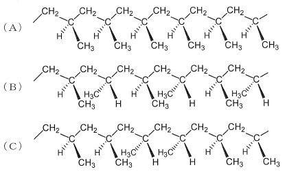

令和2年度 問15 高分子化学
下図はポリプロピレンの立体構造を示しており、太線は紙面から手前側、点線は紙面の奥側に結合があることを意味している。次の記述のうち、最も適切なものはどれか。

①
Aはイソタクチック構造を示している。
②
Aはシンジオタクチック構造を示している。
③
Bはアタクチック構造を示している。
④
Bはヘテロタクチック構造を示している。
⑤
Cはシンジオタクチック構造を示している。
正答
① Aはイソタクチック構造を示している。
ポリプロピレンの主鎖を平面ジグザグ構造で考えると、メチル基の配置によって3種類の立体構造が可能です。
- イソタクチック（アイソタクチック）：メチル基がすべて同じ側に配置
- シンジオタクチック：メチル基が交互に逆側に配置
- アタクチック：メチル基の配列に規則性がない
チーグラー・ナッタ触媒は、高度に立体規則性の高いアイソタクチックポリプロピレンを初めて合成することを可能にしました。
チーグラー・ナッタ触媒の後に開発されたメタロセン触媒は、均一系触媒として知られています。この触媒は、オレフィン類の重合および共重合において、分子量分布や分岐の制御を可能にしました。メタロセン触媒の特徴として、高活性、得られるポリマーの分子量分布が狭いこと、さらに立体規則性（アイソタクチックやシンジオタクチック）の制御が可能であることが挙げられます。
メタロセン触媒の助触媒としてメチルアルミノキサンを利用した触媒はカミンスキー触媒と呼ばれます。